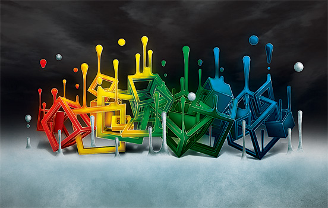
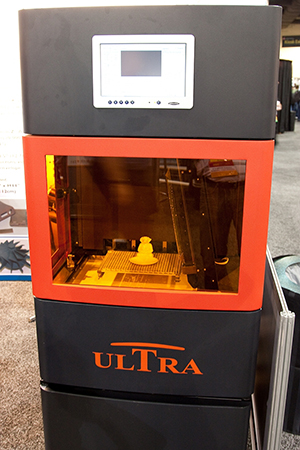
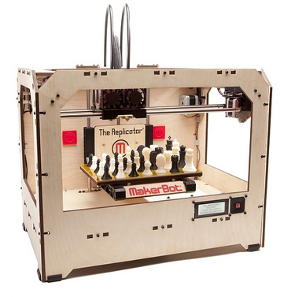
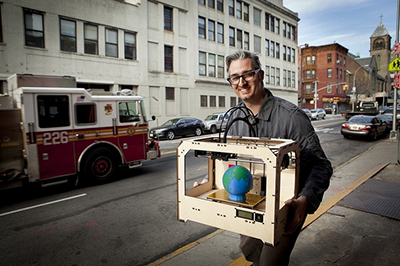
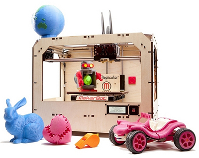
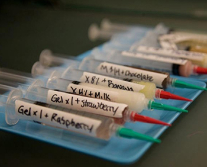
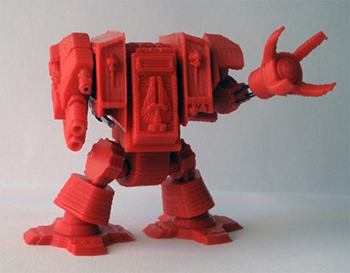

Imprimarea 3D:
(Sursa: Descopera.ro)
Imprimarea 3D este un proces folosit de câteva decenii în industrie, unde mai poartă numele de "prototipare rapidă". Această tehnologie a apărut în anii '80, fiind folosită iniţial de companiile cu bugete masive, precum cele din industria aerospaţială, sau de echipele de Formula 1.
Acestea funcţionează într-un mod similar imprimantelor obişnuite, folosind în loc de cerneală diferite materiale (de la plastic la argint sau chiar la titaniu) pe care le «imprimă» în straturi succesive, construind astfel un obiect.
Imprimantele 3D permit designerilor să producă într-un timp foarte scurt un prototip. Astfel, acesta poate fi testat şi remodelat rapid, fiind redus considerabil timpul necesar pentru a trece de la etapa de prototip la cea de produs finit.
Spre exemplu, constructorii de maşini de Formula 1 puteau crea cu ajutorul aparatelor de prototipare rapidă componente cu forme extrem de precise precum spoilerele. Producţia acestor piese complexe prin metode clasice putea dura câteva săptămâni, însă folosirea imprimantelor 3D reducea această perioadă la doar 48 de ore. Astfel, timpul câştigat permitea producătorilor să testeze mai multe variante ale componentelor şi să ajungă la versiunea finală mult mai repede.

Un alt avantaj al folosirii imprimantelor 3D este capacitatea lor de a produce forme imposibil de creat cu ajutorul tehnicilor de producţie în masă. Acest lucru permite companiilor să apeleze la biomimetism, copiind formele prezente în natură pentru a obţine produse mai eficiente cu costuri mai mici. Un astfel de exemplu vine de la MIT, unde cercetătorii conduşi de Neri Oxman au folosit o imprimantă 3D pentru realiza cel mai uşor şi totodată cel mai rezistent stâlp de beton. Pornind de la faptul că tulpina unei plante este formată din filamente verticale de densităţi diferite, Oxman a folosit o imprimantă 3D pentru a tipări o structură formată din filamente de beton cu diferite densităţi.
Astăzi, tehnologia este prezentă în majoritatea laboratoarelor de cercetare deţinute de companiile care produc gadgeturi, fie că este vorba despre aparate de ras, despre cel mai sofisticat smartphone sau chiar despre componentele complexe ale avioanelor. Imprimantele 3D pot produce inclusiv obiecte de dimensiuni mari: în 2011, Urbee a devenit primul automobil ale cărui componente exterioare au fost create integral cu ajutorul unei imprimante 3D.
Tehnologia a progresat enorm în ultimii 20 de ani, astăzi fiind posibilă imprimarea de modele 3D din 40 de tipuri de materiale. Ca urmare a acestui progres, imprimantele 3D nu mai sunt folosite doar pentru crearea de prototipuri, ci chiar pentru produsele finite.
Specialiştii NASA consideră că imprimantele 3D reprezintă o metodă eficientă de producţie a instrumentelor şi pieselor de schimb necesare pentru buna funcţionare a Staţiei Spaţiale Internaţionale. În acest moment, transportul unui kilogram de echipamente către SSI costă aproximativ 20.000 de dolari, astfel că folosirea unei imprimante 3D ar reduce semnificativ costurile. Mai mult, o imprimantă 3D oferă flexibilitate. Unul dintre cercetătorii care colaborează cu NASA în cadrul proiectului imprimării 3D, Gonzalo Martinez, a explicat: "Dacă astronauţii de pe Apollo 13 ar fi avut o imprimantă 3D la bord, celebra frază «Houston, avem o problemă» ar fi fost de fapt «Houston, avem o problemă, trimiteţi un model ca să tipărim instrumentul de care avem nevoie pentru a o rezolva".
În 2011, specialiştii agenţiei spaţiale americane au testat cu succes tipărirea unui instrument (o cheie franceză) în condiţii de gravitaţie zero. Ca urmare, NASA a anunţat că intenţionează să doteze Staţia Spaţială Internaţională cu această tehnologie în 2014.
BACK TO TOP
Imprimantele devin accesibile artizanilor

Chiar dacă imprimantele 3D există de câteva decenii, ele sunt folosite acum de multe persoane pasionate de crearea obiectelor, ca urmare a reducerii semnificative a costului unui astfel de sistem.
Dacă imprimantele 3D folosite în industrie costă până la un milion de dolari, kiturile destinate producţiei de obiecte la scară mică pot fi achiziţionate la preţuri începând de la 1.300$.
Astăzi, zeci de mii de persoane folosesc astăzi această tehnologie pentru a concepe şi crea obiecte şi piese de schimb. Pe cel mai important site destinat pasionaţilor imprimantelor 3D, Thingiverse, se regăsesc deja peste 15.000 de modele. Obiectele create variază de la cele utile, precum vaze, suporturi de periuţe de dinţi, la diferite jocuri (seturi de şah, de exemplu), până la veritabile opere de artă sau chiar instrumente muzicale.
Demonstrații si exemple:

Site-ul are la bază filozofia "open source", ceea ce înseamnă că orice model încărcat pe site este disponibil gratuit şi poate fi modificat de oricine după propriile preferinţe.
Obiectele pot fi create pe computer folosind aplicaţii software disponibile gratuit, precum Google Sketchup sau TinkerCAD.
Bre Prettis, CEO-ul uneia dintre cele mai cunoscute companii din domeniu, MakerBot, afirmă că "trebuie să facem tot posibilul ca această tehnologie să ajungă în mâinile celor din noua generaţie. Copiii din ziua de azi vor fi nevoiţi să ştie «digital design» pentru a putea să rezolve problemele zilei de mâine".

Companiile producătoare de imprimante 3D afirmă că 2012 este anul în care va fi disponibil pentru prima dată pe piaţă un model cu preţul sub 1.000$ şi că preţul acestor echipamente urmează să mai scadă pe măsură ce tehnologia este adoptată de un număr tot mai mare de persoane.
Cel mai important pas în istoria acestei tehnologii revoluţionare va fi momentul în care aceasta nu va mai fi doar apanajul pasionaţilor, ci va fi folosită de un număr tot mai mare de persoane.
"Dacă vom putea democratiza accesul la această tehnologie, baza noastră de utilizatori se va mări", explică CEO-ul companiei 3D Systems, Abraham Reichental. "Această tehnologie va ajunge în dormitorul copiilor noştri. Imprimanta 3D ar putea fi chiar ultima jucărie pe care le-o vom cumpăra copiilor noştri, pentru că şi le vor crea singuri după aceea, acest proces urmând să le stimuleze creativitatea", susţine Reichental.
În intervalul 2010-2011, preţul mediu al imprimantelor 3D produse de compania 3D Systems s-a înjumătăţit, iar dacă tendinţa se va menţine, previziunea lui Reichental ar putea deveni realitate mai repede decât ne aşteptăm.
Provocarea pirateriei

Deşi tehnologia imprimării 3D este utilizată la scară restrânsă deocamdată, deja au început să apară primele "copii pirat" ale unor produse existente pe piaţă.
Astfel, unul dintre cele mai mari site-uri din lume dedicate schimbului de fişiere, The Pirate Bay, a anunţat pe 23 ianuarie că va lansa o categorie specială dedicată modelelor 3D. "Noi, ca societate, am difuzat informaţie dintotdeauna şi vom continua să facem acest lucru. Credem că următorul pas în ceea ce priveşte copierea va fi dinspre digital spre forma fizică. Credem că în scurt timp oamenii îşi vor tipări piesele de schimb pentru autovehicule şi că în maxim 20 de ani ne vom descărca de pe internet pantofii", anunţă manifestul celor de la The Pirate Bay.
"Societatea va obţine beneficii enorme de pe urma acestei tehnologii: nu va mai fi nevoie ca un număr foarte mare de produse să fie livrate în zone diferite ale globului, nu vor mai exista copii forţaţi să muncească, iar oamenii înfometaţi vor putea fi hrăniţi cu mâncare «tipărită». Nu vom mai distribui doar reţeta, ca astăzi, ci chiar mâncarea", se încheie cu optimism manifestul «piraţilor».

Momentan, modelele digitale pe care membrii comunităţii Pirate Bay le distribuie sunt create chiar de ei, însă pe măsură ce tehnologia va fi adoptată de un număr tot mai mare de persoane, vor exista cu siguranţă "modele" distribuite fără permisiunea persoanelor sau companiilor ce deţin drepturile asupra creaţiilor respective.
Cu alte cuvinte, dacă astăzi Internetul facilitează copierea ilegală a melodiilor şi a filmelor de la Hollywood, în câteva decenii va fi posibilă «piratarea» unor produse fizice.
Primele probleme au început deja să apară, site-ul Thingiverse fiind acuzat de Games Workshop (o companie producătoare de jocuri de societate) de găzduirea ilegală a unui model din jocul Warhammer, asupra căreia compania deţine drepturile de proprietate intelectuală.
Mai multe informatii, pe pagina oficiala / (Sursa: Descopera.ro)